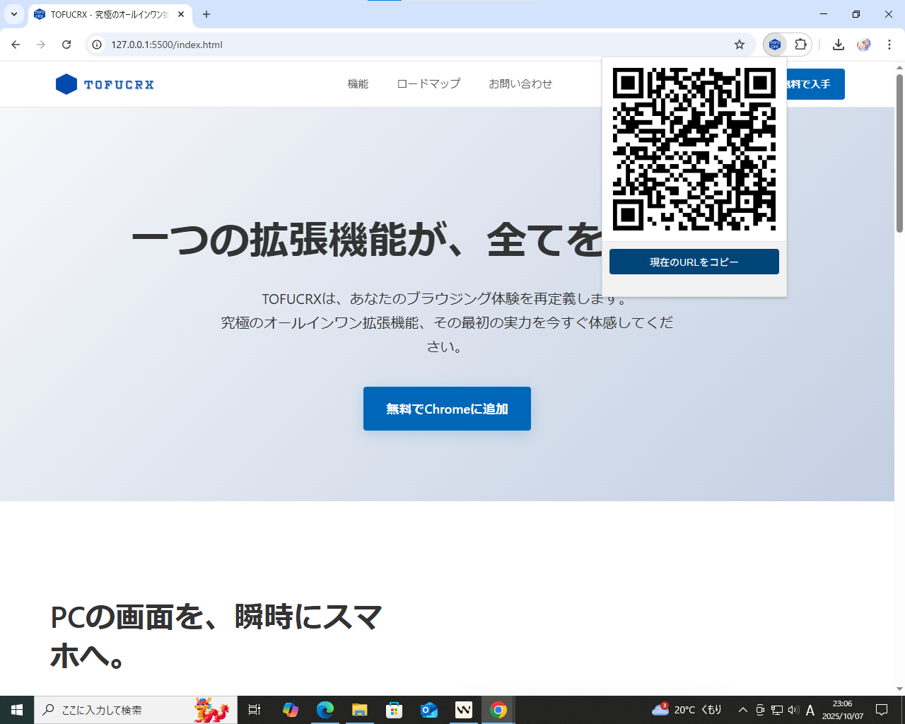

機能紹介
TOFUCRXが提供する、現在利用可能な機能と開発中の機能について詳しくご説明します。
リリース済み
瞬時のQRコード生成
現在閲覧しているページのURLを、ワンクリックでQRコードに変換します。PCの画面に表示されたQRコードをスマートフォンのカメラで読み取るだけで、すぐに同じページにアクセスできます。面倒なURLの打ち込みや、メッセージアプリでの送信作業はもう必要ありません。
主な利用シーン:
- PCで見つけたレストランの地図を、外出先でスマホから確認したい時。
- 長文の記事を、移動中の電車内でスマホで読み続けたい時。
- 友人にWebページをその場で見せたい時。

開発中
高度なタブ管理
「後で読みたい」「このプロジェクトで使う」など、目的別にタブをグループ化して保存・管理できる機能を開発中です。ブラウザを閉じてもグループは保存され、必要な時にワンクリックで復元可能。無数のタブによるメモリの浪費を防ぎ、作業効率を劇的に向上させます。
計画中
ブラウザ統合ノートパッド
Webサイトで見つけた情報を、ページを離れることなく素早くメモできる機能を計画しています。保存したメモには、自動的に出典元のURLが添付されるため、後から情報のソースを確認するのも簡単です。アイデアやToDoリスト、抜き書きなどを一元管理できます。